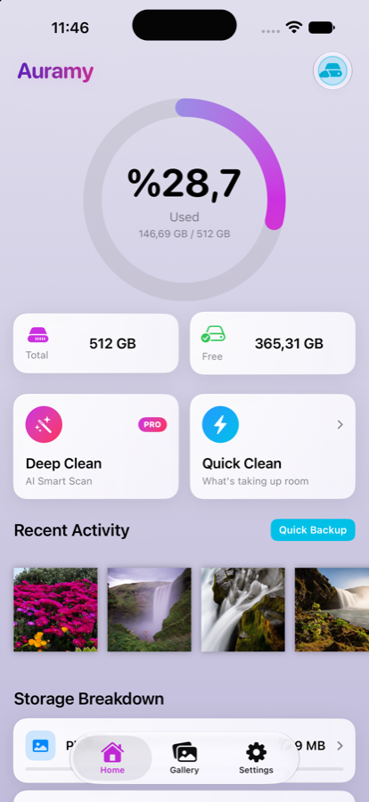
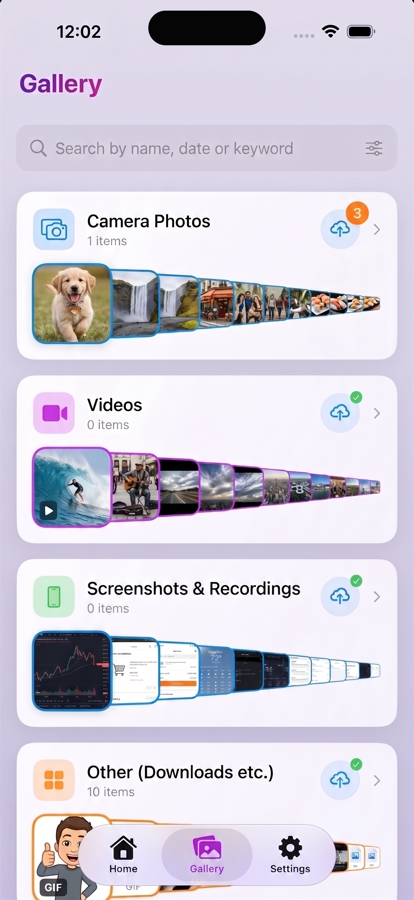
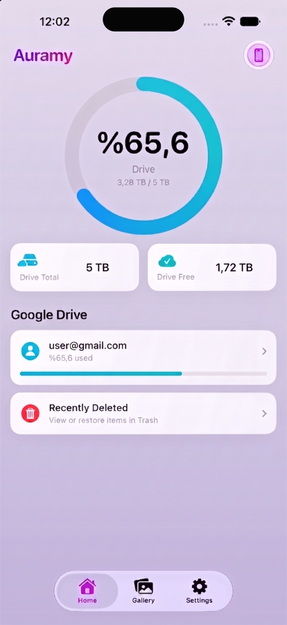

Three things, one app

Know your storage
A single figure for what is used and what is left, then a breakdown by photos, videos, screenshots and recordings — with the size of every file, which Photos never shows you anywhere.

A gallery that stays out of the way
Camera photos, videos, screenshots and downloads as plain rows you can scroll. Search by name, date or keyword — the index is built for you in the background, so it works the first time you look.

Back up in one place
Send your library to a folder in your own Google Drive, filed by category and date. There is no Auramy server and no account to create.
What it does
Find the clutter
Screen recordings, videos over 100 MB, screenshots older than six months and oversized photos, each in its own group with a running total. Nothing is ever pre-ticked, and favourites are never suggested.
Duplicates, side by side
Every group is laid out so you can see which copy is being kept before anything happens — overrule it, or wave the whole group off with Keep All.
Deleting is always reversible
Removals go through the system's own confirmation into Photos › Recently Deleted, where they stay recoverable for 30 days.
Shrink videos, keep the memory
Re-encode 4K clips to 1080p, carrying the original date and location so they stay put in your library. A re-encode that isn't meaningfully smaller is thrown away and your original kept.
Restore to a new phone
Connect the same Google account and Auramy downloads what your backup has and the device doesn't. Restoring is never behind a paywall — your files are your files.
Widgets, Shortcuts, Control Centre
Storage and a photo on your Home Screen, three Control Centre buttons, and fourteen Shortcuts actions — back up now, scan for duplicates, search your library — for Siri and automations.
Editors built in
Crop, rotate, adjust and filter photos; trim, speed up and export videos. No round trip through another app.
Locked, and quiet about your location
An optional Face ID lock on the whole app, and GPS coordinates stripped from anything you share out — both free, both switchable.
Free, and Auramy Pro
Auramy is free to download and stays genuinely useful without paying: the gallery, search, the storage breakdown, both editors, the duplicate and cleanup scans, widgets, Shortcuts, the Face ID lock, backing up on demand and restoring from Drive all work as they are. Seeing exactly how much space you could recover is free and unlimited.
Auramy Pro — a one-time lifetime purchase, or a yearly subscription with a 3-day trial — adds:
- Deep Clean: one pass over duplicates, near-identical bursts, out-of-focus photos and stale screenshots, cleared in a single confirmation
- Unlimited bulk delete, including Select All (free removes up to 10 items at a time)
- Video compression to 1080p
- Original-quality backup — ProRAW, 48 MP and 4K reach Drive untouched
- Automatic background backup, and Drive folders by category, year and month
- Alternate app icons
Turning a Pro feature off is never gated, so a lapsed subscription can never strand a backup or lock you out of your own app.
Your photos stay yours
There are no analytics, no crash reporting, no advertising and no Auramy account. Nothing about you or your library is sent to the developer.
Scanning, duplicate detection and focus assessment all run on your device.
Backups go to your Google Drive, and Auramy asks Google for only the
drive.file permission — it can see nothing in that Drive except the
files it created itself.
Read the full privacy policy.
Questions?
The support page answers the common ones. Anything else — bugs, feature requests, or just a question — goes to yagjz@icloud.com. Auramy is made by one person, so please allow a couple of days for a reply.